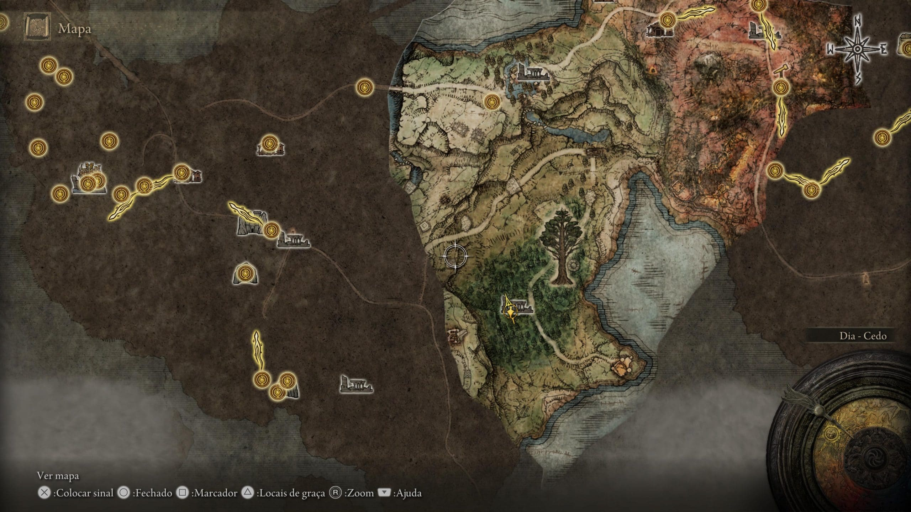

Elden Ring: vale a pena?
O melhor trabalho da FromSoftware e um forte candidato ao GOTY
Mudanças sempre são difíceis. Sair da casa onde você nasceu para um lugar desconhecido é frustrante, amedrontador e bem chato. Mas é só saindo da zona de conforto que grandes recompensas vêm. Elden Ring se resume a isso: mudanças. E vai além, pois é sobre mudanças muito boas!
O novo título da FromSoftware é a expressão máxima de resultado de anos de títulos de qualidade, como Dark Souls, Bloodborne e Sekiro: Shadows Die Twice. O game reúne as melhores características dos projetos da desenvolvedora, aprimora conceitos estabelecidos anteriormente e apresenta mecânicas inéditas muito bem aplicadas para garantir seu próprio espaço.
Em suma, Elden Ring marca uma nova era para o estúdio e para o gênero soulslike. O sarrafo subiu e, agora, a exploração de mundo aberto, a variedade de inimigos, o sistema de combate, a trilha sonora e o level design, tudo isso parece não caber mais na estrutura de Dark Souls.
Além de marcar história dentro do seu próprio gênero, o título também dá respostas para perguntas da indústria. “Os jogos de mundo aberto estão saturados?” — Elden Ring entrega um universo instigante, viciante e cheio de nuances. “O modo fácil é obrigatório para games?” — o jogo tem muitas formas inteligentes de evoluir e vencer sem necessariamente nerfar os inimigos. “Falta criatividade na indústria?” — bem, os chefões são um show a parte.
É um game ambicioso, com muito conteúdo e batalhas desafiadoras. É um título para comprar e passar meses explorando tudo o que ele tem a oferecer. Mais do que é isso, é um jogo que falaremos por muito tempo.
Finalmente, uma história entendível
Pode parecer mentira, mas é verdade: a história de Elden Ring é compreensível. Geralmente, os jogos da FromSoftware são marcados pelo enredo subjetivo e aberto a várias interpretações, mas o novo título segue uma narrativa mais clara.
Em Elden Ring, os jogadores assumem o Maculado, um ser criado pelos resquícios de graça da Térvore. Inicialmente, sua missão é recuperar os fragmentos do Elden Ring (ou Anel Prístino), tornar-se o novo Lorde Prístino e restaurar a Ordem Áurea. Simples, não é? Bem, nem tanto. Há finais diferentes – três no total – e cada um deles é resultado de ações com NPCs específicos ou matar chefes em determinada ordem.
Graças à construção da lore de George R.R. Martin (criador da Crônicas de Gelo e Fogo), todo o universo de Elden Ring é mais entendível. Ao mesmo tempo, o diretor Hidetaka Miyazaki deixou espaços para interpretações. O jogo oferece detalhes da história e dos personagens em descrições de itens e na própria exploração do mundo, mas esses elementos estão bem menos presentes se comparados com os títulos anteriores.
O enredo fica ainda mais rico por causa dos personagens que aparecem na jornada do Maculado. É notório como Miyazaki e Martin trabalharam juntos nesse quesito, pois há criaturas bizarras, imponentes, assustadoras e heroicas. Todas possuem falas que entregam pistas sutis sobre o universo e dão sentido à jornada do protagonista.
O trabalho do estúdio resultou em um universo unificado! História, gameplay e exploração se relacionam constantemente no jogo, sendo impossível separar um do outro. Se o jogador quer os detalhes do enredo, ele precisa buscar respostas pelo mapa (exploração) e em cada ponto há um desafio à espreita (gameplay).
As “missões principais” do game exigem uma exploração minuciosa para encontrar informações da narrativa e, claro, para o personagem ganhar poder e vencer os chefes. Elden Ring não foi feito para “ir do ponto A ao B” linearmente – caso tente fazer isso, a frustração será grande pelos inimigos poderosos pelo caminho – mas é uma experiência dentro de um universo cheio de segredos, mistérios e recompensas.
Por causa desse “vai e vem” no mapa, a FromSoftware criou flechas que indicam o caminho principal. Assim, o player sabe que está progredindo na campanha e qualquer outra rota serve para exploração secundária. De início é um pouco confuso, mas logo o jogador se acostuma.
Um mundo obrigatoriamente explorável
Uma das principais inovações da FromSoftware em Elden Ring é o mundo aberto. Pela primeira vez, o estúdio criou um universo em que não segue um roteiro pré-determinado e uma estrutura engessada. De fato, o jogador é completamente livre para seguir o caminho que desejar.
A missão do Maculado é recuperar os fragmentos do Anel Prístino que estão em posse dos semideuses. Esses seres poderosos habitam em diferentes áreas do mapa e têm suas especificidades. Godrick, por exemplo, fica no alto da Torre Tempesvéu, enquanto o general Radahn está num castelo em uma região árida.
O grande diferencial de Elden Ring é que não há uma ordem estabelecida para desenrolar a história. Quer ir para o extremo norte? Sem problemas! Quer tentar apostar no primeiro caminho que ver? O mundo é seu. Não existe roteiro ou limitações, o Maculado é livre com suas escolhas.
A FromSoftware caprichou no tamanho do mapa! Há uma boa variedade de biomas e cenários, sendo que a exploração deles sempre resulta em um ponto principal (dungeon) onde possui o seu próprio ecossistema até chegar ao momento de enfrentar o boss.
O mapa oferece muita coisa. Além das criaturas vagando de um lado por outro, espere por quests secundárias, estas acessadas quando o jogador encontra um NPC específico. Alguns exemplos de tarefas são conquistar um pequeno posto avançado, encontrar um personagem, descobrir uma gruta subterrânea ou matar um monstro específico.
A título de comparação, o game é muito grande mesmo. Nós chegamos ao chefe final com 65 horas e para a análise era necessário tomar caminhos rápidos, mas há relatos de pessoas vencendo o chefe final após de 120 horas.
Elden Ring e o modo fácil
Precisamos dizer: o jogo não é fácil, mas oferece mais opções de abordagem que facilitam a vida do jogador. Por exemplo, se você travar em um chefão, basta dar meia-volta e procurar por outro caminho para explorar e subir de nível. Após horas andando pelas Terras Intermédias, o Maculado receberá experiência o suficiente para melhorar atributos e ganhar equipamentos mais poderosos. Então, vencer o primeiro chefe será uma tarefa menos estressante.
De certo modo, os players são obrigados a explorar o universo, mas isso é bem diferente dos grinds de Assassin’s Creed. Nos games da Ubisoft, é necessário subir de nível com missões aleatórias para aceitar a missão principal. Em Elden Ring, toda exploração serve para a continuidade dos eventos da história. Nenhum caminho é aleatório, nenhum caminho é banal, pois evoluem o jogador e narrativa.
Ainda sobre a dificuldade de Elden Ring, os jogadores perceberão que o Maculado possui muitas habilidades, magias, encantamentos, armas e armaduras. Há uma combinação interessante de capacidades mágicas e ataques corporais. Nesse título, atributos equilibrados permitem alternar entre estilos de combate durante o confronto, escolhendo estratégias diferentes para inimigos específicos.
Dentre todos os jogos da FromSoftware, Elden Ring é o mais acessível pelos fatos citados. Isso não o torna fácil, porque os minichefes e chefões são assustadoramente difíceis, mas ele permite que o jogador evolua constantemente, tornando a experiência menos frustrante para os novatos.
Um gameplay primoroso
Lembre-se: história, exploração e gameplay andam de mãos dadas o tempo todo nesse game. A história provoca o Maculado a buscar pelos fragmentos do Anel Prístino, a exploração serve para desvendar os mistérios e o gameplay funciona para a evolução do personagem. A palavra-chave para definir a jogabilidade de Elden Ring é justamente “evolução”.
O sistema de atributos está de volta, mas bem objetivo e explicativo. Ele é fundamental para a vitória, porque aumentar o status garante mais dano, pontos de vitalidade ou magia. Os monstros grandes que assustavam no início do jogo, não são tão intimidadores após as melhorias. Inclusive, ir e voltar é muito comum nesse game. Não se sinta chateado em não passar de um chefão de primeira.
O personagem conta com novas ferramentas, como as Runas obtidas dos semideuses – algo parecido como as runas de Bloodborne – e materiais de construção coletados no mapa. Os recursos são essenciais forjar utensílios para os combates e poderes imbuídos nos equipamentos.
Há muitas opções para a criação de uma classe. É possível fazer soldados focados no combate corporal, mas também feiticeiros híbridos. Os jogadores são livres em criar estilos único de gameplay, atribuindo pontos aplicar danos críticos ou skills de sangramento.
No início, dez classes estão disponíveis. O número pode assustar, mas elas são importantes apenas nas primeiras horas. Conforme se ganha experiência, é possível transformar um Vagabundo (personagem de combate corporal) em um Astrólogo (personagem mágico). Além disso, há um item que reseta todos os atributos. Novamente, isso é a FromSoftware reafirmando a liberdade que o jogador possui em toda a experiência do jogo.
Elden Ring não é um Dark Souls 4, por isso, não adianta repetir os costumes antigos e tentar enquadrar. Afinal, as mudanças exigem uma transformação de hábitos. Tanto é que as mecânicas inéditas, como o sistema de pulo e o combate a cavalo, também são importantes para a progressão e dão novos ares à jogabilidade.
Detalhes que formam o espetáculo
Especificamente sobre os gráficos, Elden Ring não é mais bonito que Demon’s Souls Remake. Porém, é uma comparação injusta por causa da estrutura condensada e linear deste. Ainda sim, o novo game da FromSoftware conta com cenários bem trabalhados e o design das áreas sempre são extremamente cativantes. A beleza do jogo está nessas peculiaridades.
O gameplay no Modo Desempenho trabalha com a resolução dinâmica, mirando sempre em 60 FPS e os gráficos se ajustando próximo ao 2160p e o Modo Resolução fica em 4K nativa, oscilando entre 30 FPS e 40 FPS. Além disso, é possível configurar o brilho do HDR e o nível de saturação, dando ares mais vivos ou mais cinzentos à experiência.
Todas as criaturas do jogo são um show a parte. Existem gigantes flamejantes, monstros alados, pequenos soldados e até um caranguejo colossal. A desenvolvedora entregou uma grande lista de inimigos e aprender os movimentos deles será um desafio por si só durante a jornada.
A criatividade dos designers na criação do universo de Elden Ring é nítida. O mapa surpreende pela variedade de cenários, de elementos e de personagens. A exploração com a montaria ainda contribui para a imersão, pois é possível visitar qualquer ponto que chame a atenção do jogador e lá podem estar áreas secretas, chefes opcionais e equipamentos muito raros.
Quanto maior o desafio…
Em Elden Ring, os chefões merecem aplausos. É a melhor lista de todos os games da FromSoftware. Há uma boa quantidade de minichefes e os bosses principais sempre roubam a cena com o design e a dificuldade da batalha. A trilha sonora dedicada para cada um dos inimigos é de arrepiar, sendo quase obrigatório jogar com um headset que tenha suporte ao áudio 3D.
Embora as batalhas sejam estressantes, elas valem muito a pena. O sistema de recompensa de Elden Ring é o mais acentuado de todos os soulslike, porque os chefões e inimigos especiais dão muitos benefícios. Além de receber uma boa quantidade de experiência para melhorar o Maculados, os jogadores podem trocar as “Almas” dos chefes por equipamentos únicos que dão outra cara ao estilo de jogo.
A sensação de recompensa está enfatizada em cada ação in-game. Explorar pode resultar em itens para aumentar a quantidade de poções ou a qualidade delas, encontrar minichefes dará equipamentos melhores, matar os chefões garantirá bônus específicos, e até eliminar grupos de inimigos garante uma unidade de cura. A FromSoftware encoraja o jogador a tomar ações arriscadas e a sempre entrar nos desafios. Quanto maior os inimigos, mais loot eles oferecerão.
Problemas técnicos incomodam
Se recentemente vimos a Guerrilla Games aprendendo com os erros do passado e aperfeiçoando as falhas em Horizon Forbidden West, o mesmo não acontece com a FromSoftware que carrega os mesmos problemas para o novo título.
Primeiramente, o SSD do PS5 faz um bom trabalho na renderização do universo gigantesco, mas ela não é instantânea. Muitas vezes, quando o jogador volta da tela da morte, é possível visualizar as texturas do cenário carregando ou elementos aparecendo repentinamente (pop-in). É uma questão de segundos, mas não deixa de ser um incômodo.
O clássico problema da câmera também precisa ser mencionado – principalmente em ambientes fechados. Constantemente o ângulo da visão fica de um jeito que era possível “ver por dentro” das criaturas, como se elas fossem pixels em construção. As muitas batalhas contra gigantes monstros em lugares apertados dificultam a visão.
E há duas situações graves que afetam o núcleo da experiência: a instabilidade na taxa de quadros e os bugs de progresso. No primeiro caso, lutas contra chefes que têm uma rápida movimentação e muitos efeitos visuais causam a queda de quadros. Não são travamentos bruscos, mas atrapalham na execução de ataques e esquivas – o que, no caso de jogos soulslike, um ataque bem executado ou uma esquiva mal feita é a diferença da vitória para a morte.
O segundo caso é ainda mais complicado porque afeta a essência de Elden Ring: evolução e progressão. Se o PS5 é desligado inesperadamente (a energia elétrica caiu ou o jogador chutou o filtro de linha), o game não salva automaticamente e o último checkpoint pode ter sido há muito tempo. A Bandai Namco já confirmou que trabalha nesses problemas, mas ainda assim é grave.
Por fim, é necessário citar o uso do DualSense ou na verdade, a falta dele. Os gatilhos adaptáveis não foram utilizados e a resposta tátil é quase nula. O único benefício do controle é o sensor de movimento para realizar os gestos do Maculado (presentes desde Dark Souls 2) que facilita a comunicação entre os players.
Tratando sobre o multiplayer, ele funcionou perfeitamente, mas é limitado. Não é possível explorar todo o universo em coop, mas a invocação funciona em áreas limitadas – o que poderia ser mais livre para quem quisesse compartilhar completamente a experiência com um parceiro.
Elden Ring é o “Dark Souls killer”
Elden Ring marca uma nova era para a FromSoftware. É melhor esquecer Dark Souls 4 ou Sekiro: Shadows Die Twice 2, porque o título mudou as regras do jogo. Com o tripé completamente interligado (história, exploração e gameplay), o game oferece uma experiência de alta qualidade, prezando pela liberdade completa na jogabilidade.
O jogador escolhe os rumos e as melhores formas de lidar com os obstáculos, sempre buscando pelas boas recompensas em um mundo que exige horas e horas de exploração. Seja um guerreiro de combate corpo ou a corpo ou um mágico, cada estilo possui seus benefícios e desvantagens diante da gigantesca variedade de inimigos.
Maior, melhor e de alto nível, Elden Ring é o melhor trabalho da FromSoftware, um resultado de projetos passados bem-sucedidos. O game é a prova que mudanças podem ser extremamente positivas e são necessárias.
Fonte:MeuPlastation